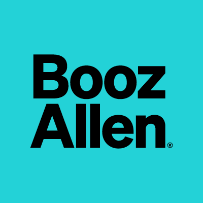

Poorna Natarajan
Experience

Palantir Technologies
Deployment Strategist
March 2024 - March 2025
Built k-LLM workflows using TypeScript and PySpark, enhancing processing reliability and securing two Air Force contracts.
Led 0 → 1 development of a full-stack platform with vector embeddings (ADA 002) and LLMs (GPT-4o, Llama 3), reducing job classification from 4 months to under 1 hour.
Developed a real-time streaming Java app for sensor fusion on Palantir Foundry, boosting drone tracking accuracy.
Deployed containerized Java/OpenCV computer vision model, tuning hyperparameters to raise accuracy from 86% to 93%.
Built NLP pipelines (GPT-4o, PySpark) for a government sales lead platform.

SMX
Machine Learning Engineer
March 2022 - March 2024
Built data pipelines using Apache Airflow, boosting throughput for unstructured sources.
Optimized GPU-based classification workflows, cutting inference latency by 18%.
Deployed serverless functions for metadata tagging with LLMs (Cohere, Llama 2) on Amazon Bedrock.
Trained FlairNLP NER models using active learning, reaching a 92% F1 score.
Integrated REST APIs with Amazon Redshift, DynamoDB, and S3.
Led 9-intern research team on topic modeling; presented results to executives.

Deloitte
Senior Consultant
June 2019 - March 2022
Led ingestion and analytics systems for COVID-19 operations, supporting the White House and Congress.
Designed AWS-based data pipelines for public health with reliability and scalability in mind.
Developed a React/Databricks visualization platform, supporting Air Force contracts in satellite imagery analytics.
Co-led a 200+ member Spark Community of Practice for internal tooling and upskilling.
Selected for Deloitte Innovation Fellowship for next-gen architecture work.

Booz Allen Hamilton
Consultant
June 2018 – June 2019
Built NLP pipelines to extract KPIs from unstructured medical notes.
Developed time series forecasting systems with Facebook Prophet to monitor 600+ Defense Health Agency clinics.
Education

Georgia Institute of Technology
M.S. Computer Science
Expected Dec 2025
Research: Applied differential privacy on transformer-based clinical summarizers to protect PII from adversarial attacks. Built models from scratch to test robustness.

University of Maryland - College Park
B.S. Bioengineering, B.A. Economics
Graduated
Capstone: Built a C-based computational imaging system for early respiratory disease detection in collaboration with Dr. Jeffrey D. Hasday and the Fischell Institute.